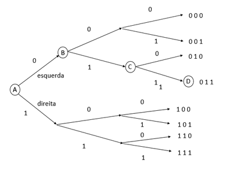
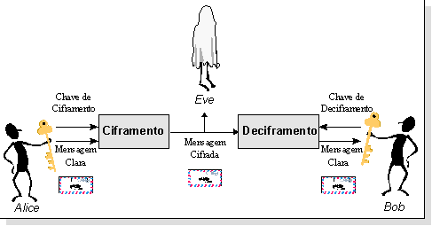
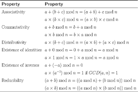

Criptografia
A criptografia é muito antiga existindo na escrita hieroglífica egípcia, utilizada para codificar os planos de batalha dos romanos e manteve-se até á 2ª Guerra Mundial, depois desta a criptografia evoluiu muito. Foi também utilizada em outras guerras, como a guerra fria. Só no inicio dos anos 70, a criptografia foi considerada uma área de investigação académica. Na actualidade está na base da computorização moderna e reconhece-se a importância de acabar com obscurantismo como factor de segurança nos sistemas criptográficos.

1948-1949 – Claude Shannon desenvolve a Teoria da Informação e enquadra o estudo da Criptografia nessa teoria
1970-1977 – Desenvolvimento e estandardização do Data Encryption Standard (DES)

1976 – Primeiro paper de Diffie e Hellmann definindo os princípios da criptografia de chave pública
1978 – Rivest, Shamir e Adleman descobrem a primeira cifra assimétrica: o RSA

1985 – Descoberta da cifra assimétrica El Gamal
1995 – Estandardização do Digital Signature Algorithm
.png)
2001 – Escolha do substituto do DES: Advanced Encryption Standard (AES)
_Round_Function.png)